Pak Vets Mobile App
Case Creation Flow Book
Assumes doctor is registered and signed in
Flow: Create Case → Select Animal → Case Detail → Add Diagnoses/Treatments/Notes → Save → Home
Table of Contents
- Dashboard (Home)
- Create New Case – Select Animal
- Search Animal (Find by Image / Search by Tag)
- Create New Case – Form Complete
- Case Detail – Overview
- Case Detail – Diagnoses (AI Suggestions)
- Case Detail – Add Diagnosis & Treatments
- Case Detail – Treatments & Notes
- Case Detail – Save & Return Home
1. Dashboard (Home)
Entry Point
Doctor lands on the dashboard. Shows welcome, doctor info (name, location), New Case button, and recent cases. Tap New Case to start, or tap a recent case to open it.
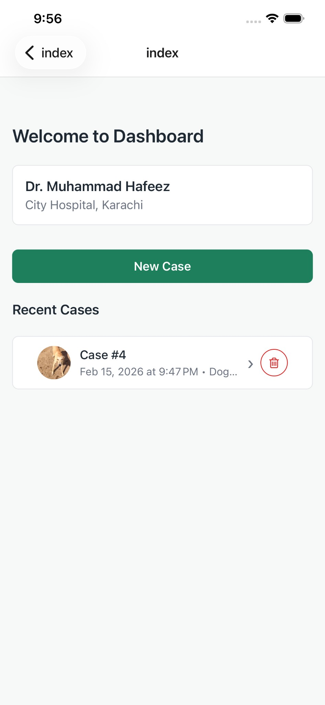
↓
2. Create New Case – Select Animal
Initial Case Form
Create New Case screen. Must select an animal first. Tap Select Animal to search or create. Case Date & Time and Chief Complaint (text or voice) can be filled. Create Case is disabled until animal is selected.
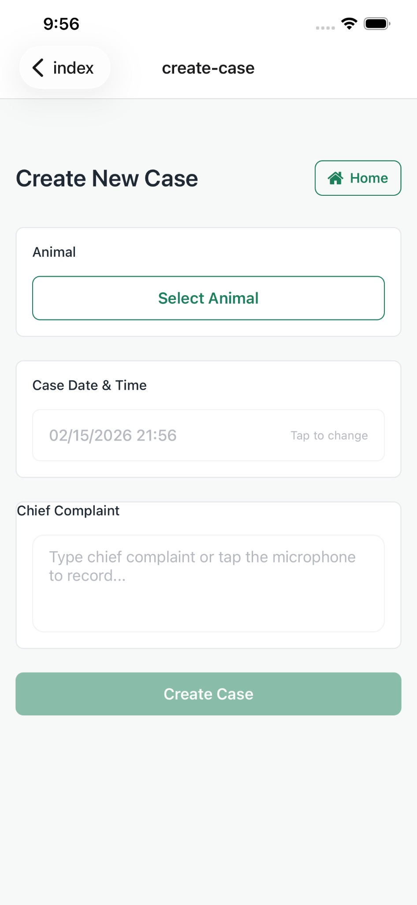
↓
3. Search Animal
Find by Image or Search
Search Animal screen. Find by image: choose Body/Ear/Face, pick photo to match enrolled animal. Search by: Tag ID, Owner Name, or Phone. If not found, Create New Animal. When match found, select animal to return to Create Case.
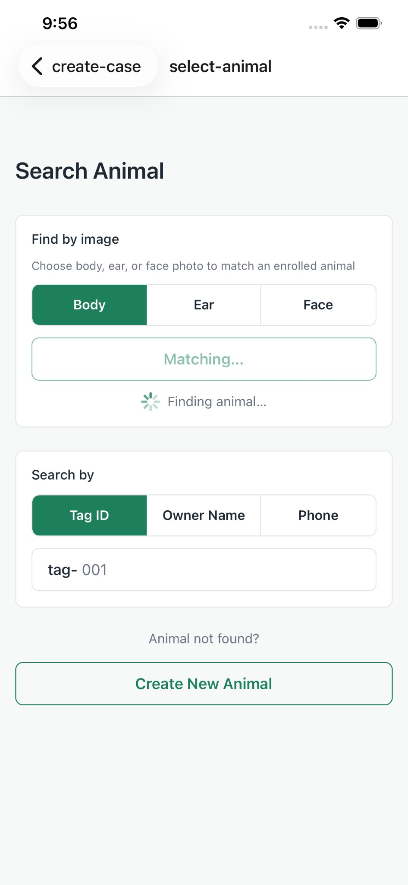
Match Found
Image match shows confidence (e.g. 99% match). Tap the matched animal row to select and return to Create Case.
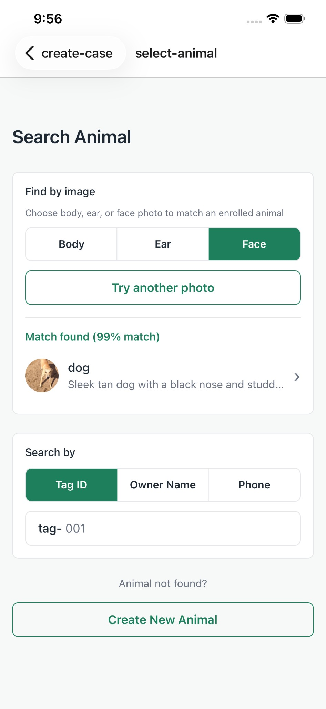
↓
4. Create New Case – Form Complete
Ready to Create
Animal selected (avatar, species, tagline, owner). Case Date & Time set. Chief Complaint entered (text or voice). Tap Create Case to create and go to Case Detail.
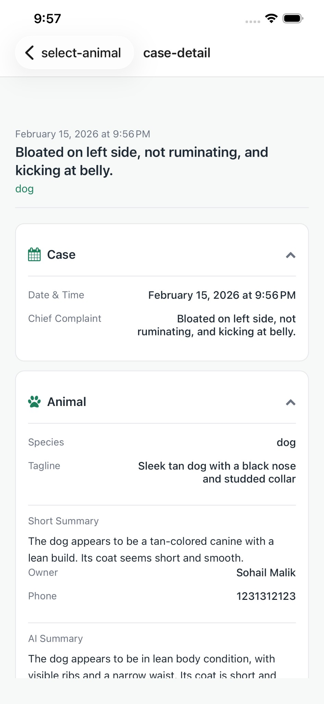
↓
5. Case Detail – Overview
Case Summary & Sections
Header shows date, chief complaint, animal. Collapsible sections: Case, Animal, Diagnoses, Treatments, Notes, Media. Expand to view or add content.
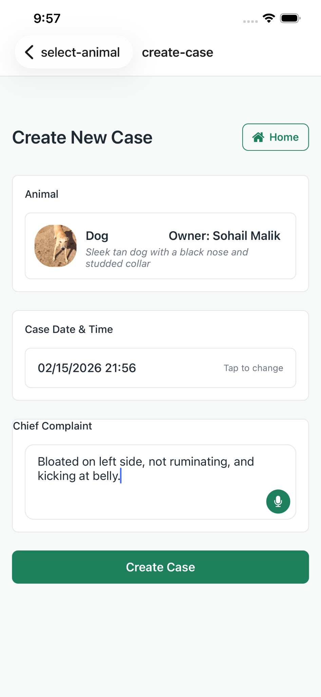
↓
6. Case Detail – Diagnoses (AI Suggestions)
Get AI Suggestions
Diagnoses section. Tap Get AI suggestions to receive diagnosis suggestions based on chief complaint. Suggested diagnoses show with CONFIRMED/SUSPECTED status. Tap + Add to add each to the case.
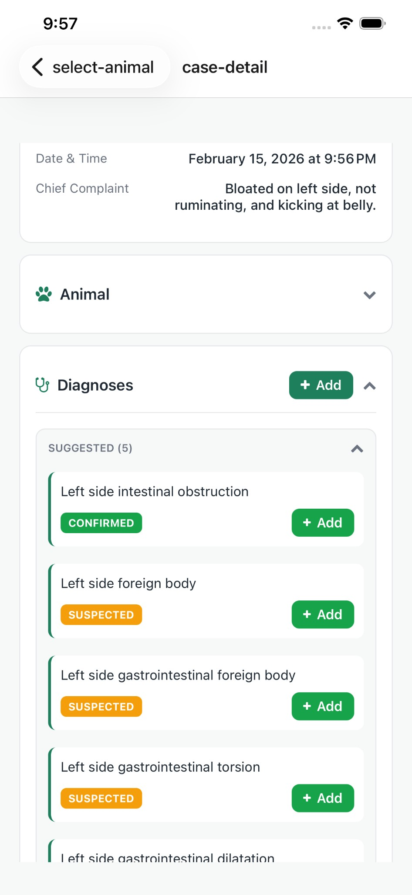
Animal Details
Animal section expanded: Species, Tagline, Short Summary, Owner, Phone, AI Summary. Link to View profile.
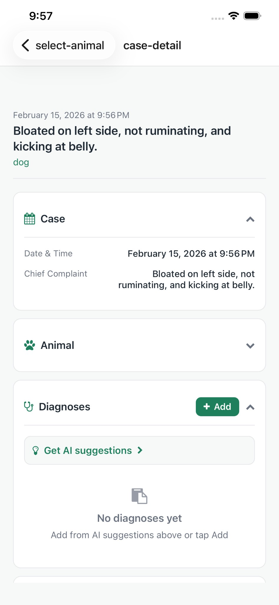
↓
7. Case Detail – Add Diagnosis & Treatments
Confirmed Diagnosis & Suggested Treatments
After adding a diagnosis (e.g. Left side intestinal obstruction – CONFIRMED), AI suggests treatments: PROCEDURE, MEDICATION, ADVICE. Tap checkmark to add each. Edit icon to modify.
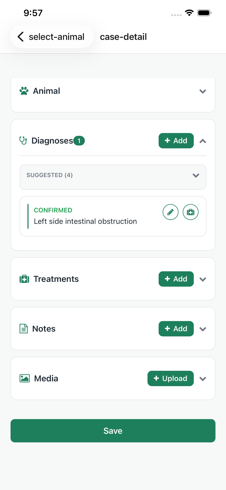
Treatments with Suggested Items
Treatments section shows added items (e.g. exploratory surgery, Metronidazole, supportive care). Each can be marked complete or edited.
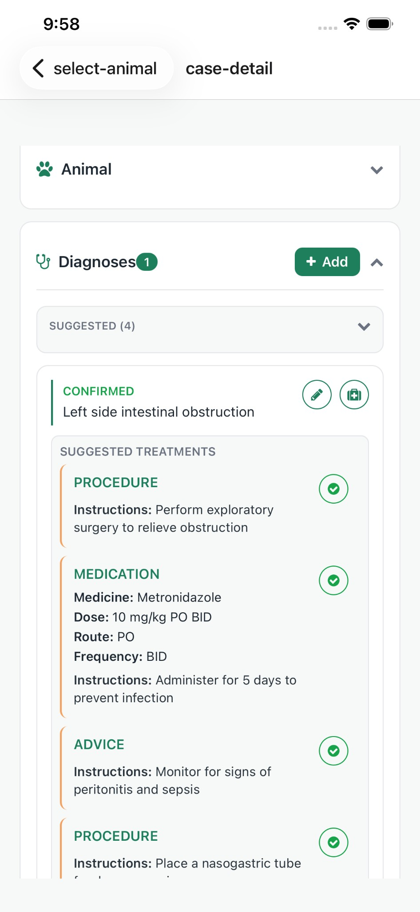
↓
8. Case Detail – Treatments & Notes
Completed Advice & Medication
ADVICE and MEDICATION with checkmarks (completed). Planned treatments (e.g. Metronidazole) show PLANNED status with edit option. Notes and Media sections available to add.
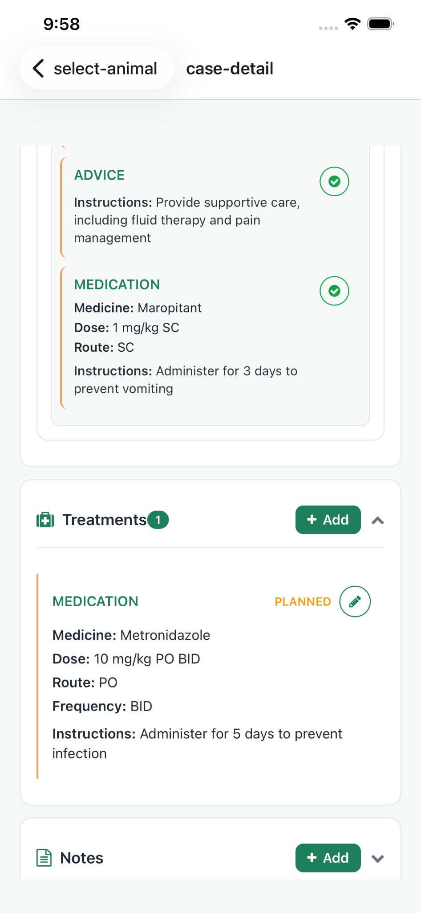
↓
9. Case Detail – Save & Return Home
Final Step – Save
Scroll to bottom. Tap Save to finalize the case and return to the Home (Dashboard). The new case appears in Recent Cases.
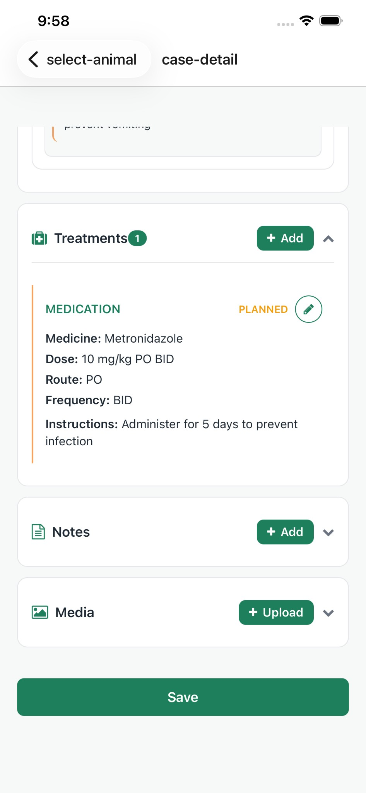
↓
Back to Dashboard
After Save, user returns to Home. New case (e.g. Case #5) appears in Recent Cases list. Flow complete.
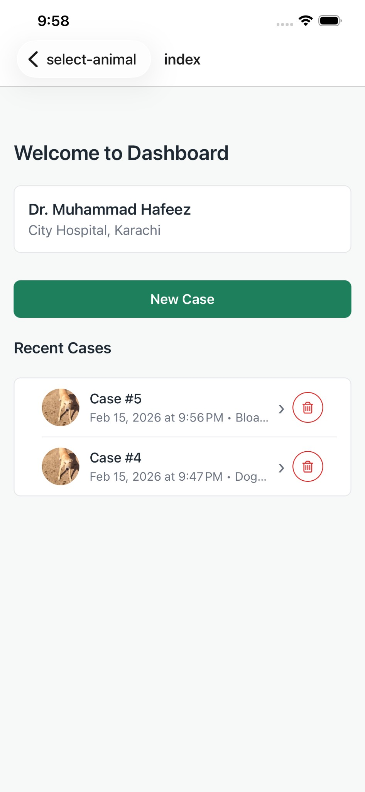
— End of Flow Book —